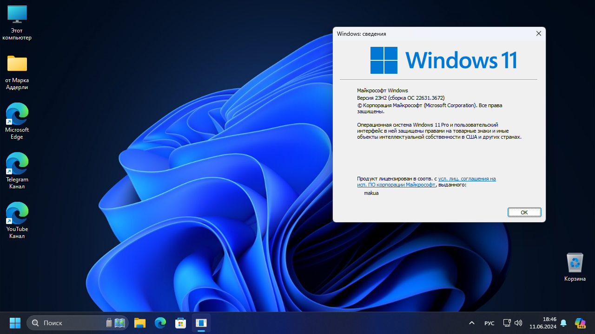
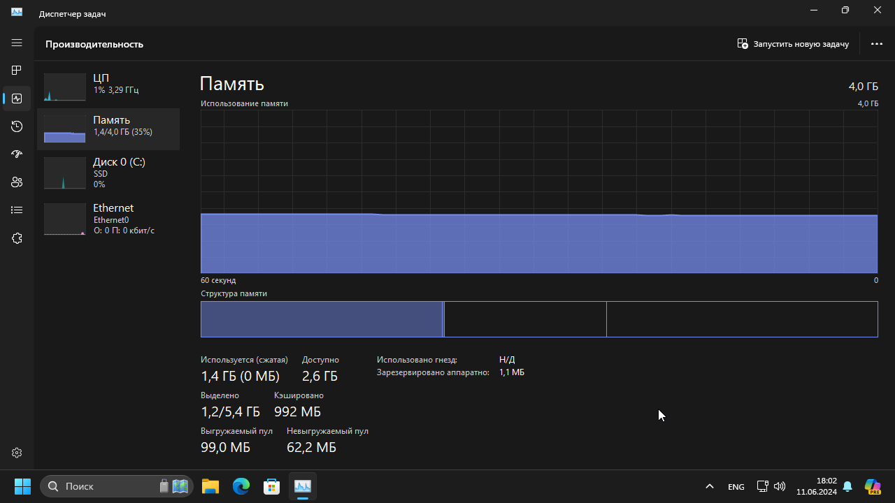
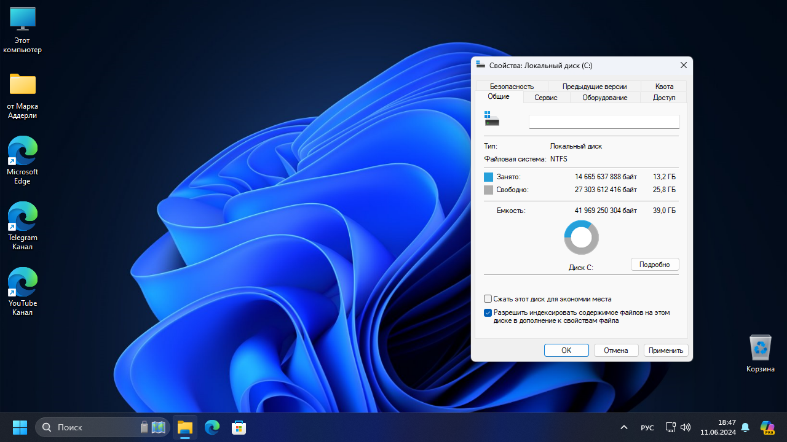
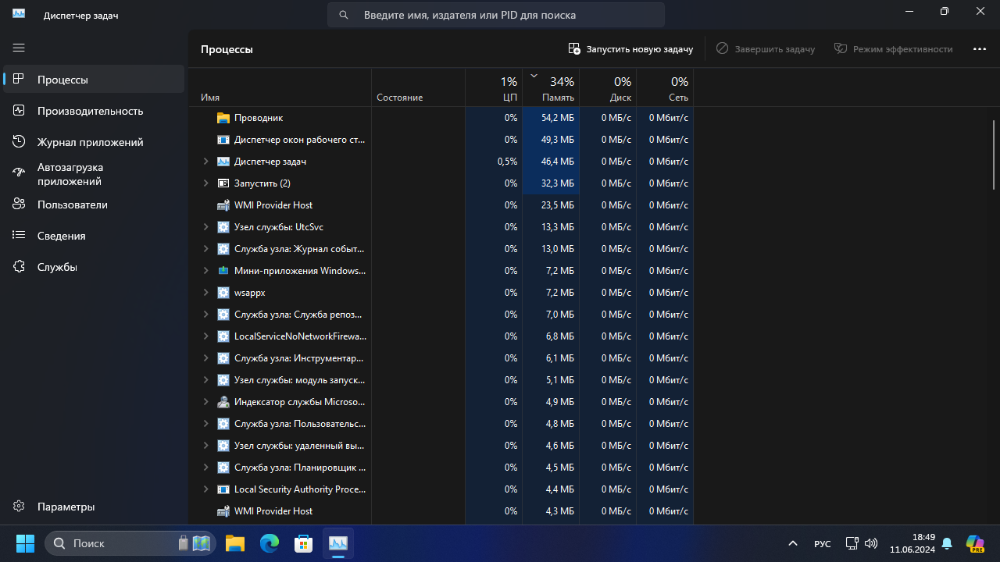

Сборки от Аддерли
MakuOS 23H2 (12.06.2024)




Сборка основана на Windows 11 23H2 22631.3672 (июнь 2024)
Удалён Windows Defender
Удалён Microsoft OneDrive
Удалены практически все UWP приложения, кроме блокнота, калькулятора и будильника
Неиспользуемые загрузки будут удаляться через 60 дней
Файлы из корзины будут очищаться через 2 недели
Отключена автоматическая перезагрузка при BSOD
В пуске включены кнопки "Загрузки", "Документы" и "Настройки"
При копировании и переносе файлов автоматически включены подробности
По умолчанию показываются скрытые файлы и папки, а так же расширения файлов
В проводнике открывается "Этот ПК" вместо "Главная"
Скрыта кнопка "Просмотра задач" и "Виджеты"
Включена иконка "Этот компьютер" на рабочем столе
После обновления системы, никакие OOBE не вылезают
Быстрый запуск отключён
Отключена установка рекламных приложений в Пуске
В папке "Загрузки" отключена группировка по датам
Включено старое контекстное меню из Windows 10
На рабочем столе есть папка "от Марка Аддерли", в которой есть 4 подпапки:
"Браузеры" - Mozilla Firefox и Google Chrome
"Программы от Марка Аддерли" - MakuTweaker, MakuTyper и MakuCheck
"Прочее" - 7zip, Steam, Telegram, VLC, SpotX и ссылка на другие репаки
"Редисты" - инсталляторы всех версий Microsoft Visual C++ Redistributable
Вес папки - 200 мегабайт
После установки системы весит около 13 гигабайт в зависимости от железа,
Потребляет около 1400 мегабайт ОЗУ. Благодаря тому, что в сборке нет Defender.
Mediafire
PixelDrain
Google Drive
о Программах от Марка Аддерли
Отблагодарить за сборку
MakusOS 23H2 (12.06.2024)